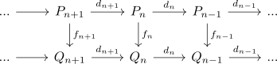
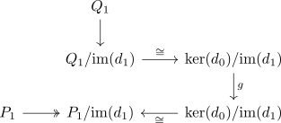
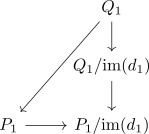
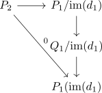
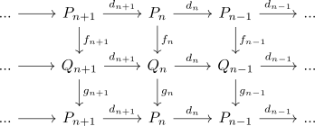
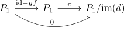
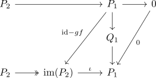
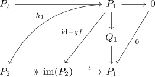
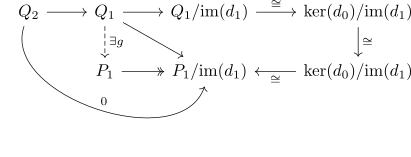
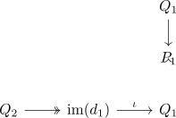

quasi isomorphism between chain complexes of projectives and homotopy equivalence
Proposition
Let $\mathcal{A}$ be an abelian category and $\mathrm{Ch_*}(\mathcal{A})$ be the category of chain complexes. Suppose

are non negatively graded chain complex of projectives with a chain map
Then $f$ is part of a chain homotopy equivalence
Proof
a)
By assumption, there exists an inverse $g$ on the homology $H_n(P) \cong H_n(Q)$ Consider

Then since $Q_1$ is projective, there exists a morphism

Then it holds, that

is the zero morphism
hence by extension of a chain map we get chain maps

Furthermore, define
as evident zero morphism and since

also ??? at least rmod ? ??? a map $h_1$

Thus by projectivity, we get an $h_1$

and hence
thus by extension of a chain homotopy it follows, that $gf$ is a chain homotopy equivalence.
b)
again we get a morphism

and again using analogously

meta
- for modules mostly happy
- in general for abelian categories correct ??